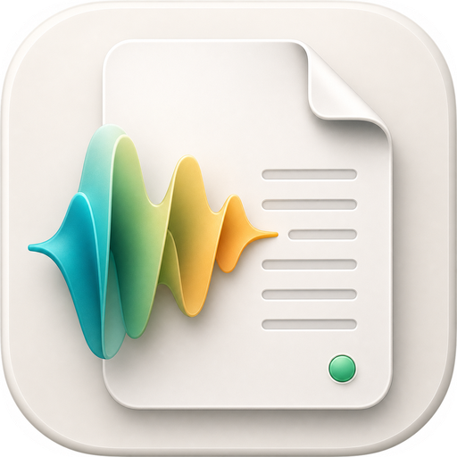
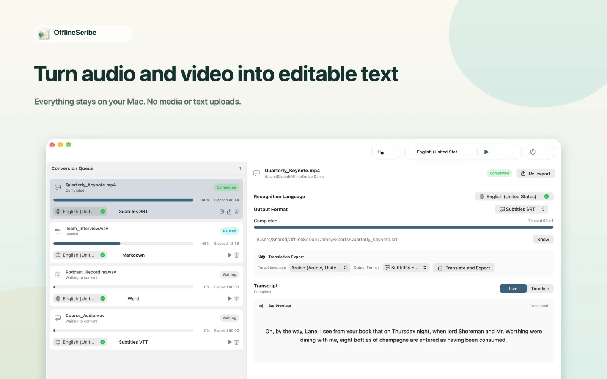

Batch conversion
Drag in one or many audio files, choose a recognition language, and process the queue one job at a time.

OfflineScribePrivate transcription for macOS
Transcribe audio and video, listen back while editing, and export documents or bilingual subtitles. Your media and text stay on your Mac.

Audio, transcript text, and translations stay on your Mac.
Inspect segments, copy original text, and translate visible lines.
Create translated TXT, Markdown, HTML, DOCX, SRT, or VTT files.
Core workflow
OfflineScribe keeps the complete transcription workflow on your Mac: queue audio or video, pause long runs, review the synchronized timeline, then export in the format your next tool needs.
Drag in one or many audio files, choose a recognition language, and process the queue one job at a time.
Pause a long transcription, handle another item first, then resume near the last finalized segment.
Translate visible timeline segments for review without changing the original transcript.
Export original transcripts or translated transcripts as TXT, Markdown, HTML, DOCX, SRT, or VTT.
Version 1.2 · Release preview
Jump to a sentence, change playback speed, edit original text or translations, and undo changes. Your edits are saved locally and restored when you reopen the app.
Actual 1.2 development build with a LibriVox recording of The Importance of Being Earnest. Recognition output requires proofreading; this example is not an accuracy benchmark.
Import MP4 or MOV, choose an audio track, and preview subtitles. Split or merge cues, adjust timing, and export original, translated, or bilingual SRT/VTT with your chosen line order.
Requires macOS 26+ and the necessary system speech and translation models, installed through System Settings. MP4/MOV support depends on the codecs macOS can decode; protected or silent video cannot be transcribed.
How it works
OfflineScribe keeps the transcription queue, language selection, output folder, timeline, and translated export controls in one focused macOS workspace.
Use the app, drag files into the queue, or send supported audio from Finder.
Switch between real-time text and timeline segments after conversion completes.
Re-export originals or create translated files for subtitles, notes, and documents.
Audio and output
Input support covers common audio files used in voice notes, interviews, meetings, and media workflows.
AAC, AIFF, CAF, FLAC, M4A, M4B, MP3, Ogg, Opus, WAV · MP4, MOV
TXT, Markdown, HTML, DOCX, SRT, VTT
Send audio to the app or start Finder translation from contextual actions.
Privacy policy
Last updated: September 1, 2026
OfflineScribe does not upload your audio, transcript text, or translations. The app is designed around Apple SpeechAnalyzer and Apple Translation frameworks running on your Mac.
Language and translation models are managed by macOS System Settings. The app checks model availability but does not download models itself.
OfflineScribe is a paid App Store download. Every feature is included, with no in-app purchases, subscriptions, trials, purchase restoration, or feature unlocking inside the app.
This static website does not include analytics scripts, advertising trackers, forms, cookies, or online fonts. Cloudflare may process standard request logs as the hosting provider.
One purchase
The App Store shows the price for your country or region. Download once and use every transcription, translation, and export feature.
Batch transcription, pause and resume, local translation, Finder actions, and every export format are included.
There are no in-app purchases, daily quotas, file-size paywalls, free trials, or subscriptions.
Get OfflineScribe for macOS 26 or later.
Support
Send conversion issues, language model questions, and workflow feedback directly to the developer.
Contact is optional. Your message opens in your default mail app, and you control what gets sent.
Email developer verneauorane104@gmail.com